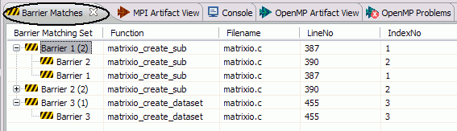
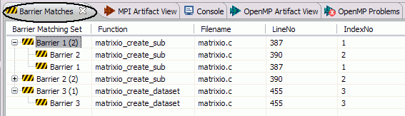
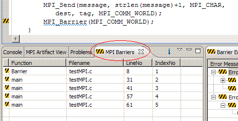
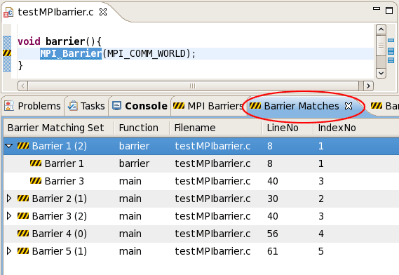
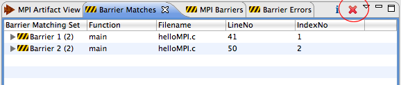

MPI Barrier Analysis detects potential deadlocks in MPI applications,
and shows barrier matches, barrier errors, and paths of all barrier
matching sets. Includes detections across multiple functions and source files.

A common source of errors in SPMD (Single Program Multiple Data) programming causes deadlocks when barrier statements, in which all tasks must synchronize, are not matched properly. If one MPI task in a communicator does not pass through the same number of MPI_Barrier statements as the other tasks in the same communicator, the other tasks will deadlock while waiting.
The PLDT MPI Barrier analysis checks an SPMD program and determines whether there are deadlocks due to the misplacement of barriers. We will report errors if any, and show "matching sets" for each barrier if error-free. The matching set of a barrier contains all barriers that synchronize with it at run time.
For example, consider the second if-branch in testMPIbarrier.c.
if(my_rank == 0){
printf("test errors\n");
MPI_Barrier(MPI_COMM_WORLD);
}
The program will become deadlocked on the above branch because some processors
will execute the global barrier in the branch while the others will skip it.
However,
it is difficult to visually detect an error if barriers are not "textually" aligned.
Now, consider the third if-branch in testMPIbarrier.c.
if(x < 3){
printf("It is not an error\n");
MPI_Barrier(MPI_COMM_WORLD);
}
Even if we only have a barrier in the then clause but
not in the else clause, there is no error since all processors agree on the branch
predicate, and they will choose the same way to go.
To run the barrier analysis, select a project, container, or source file in the Project Explorer view,
and click the MPI barrier analysis action in the PLDT icon menu.
Note that this simple example has all code in a single file, but by running the analysis on a
container (folder) or the entire project, inter-procedural barriers from other included files are also considered.
The barrier analysis produces three views of information:
The three views should show automatically after performing barrier analysis, but to bring them up otherwise, select Window > Show View > Other... and under PTP MPI Views, select the view you want to show.
The MPI Barriers view lists all barriers in the program(s), their enclosing function names, filenames, line numbers, and index numbers (beginning from 1). In the other two views, barriers are referred to according to their index numbers (e.g., the barrier with index number 1 is called "barrier 1").
To find the source code line for a barrier in the view, double-click on the line in the view, and the editor will open on that source file (if not already opened) and it will scroll to the line containing the barrier.

By running the analysis, we will show two kinds of results:
The matching sets are shown in the Barrier Matches view. They are grouped in this view as a tree view with "parent" nodes and "child" nodes. The matching set of a barrier contains all barriers that synchronize with it at run time. That is, all processes in the MPI program must arrive at one of the barrier statements in a matching set, before any of the processes can proceed. For each barrier statement in the program source files that are analyzed, a matching set is calculated and shown. So for a matching set with two members, this view will show both a matching set with the first barrier as the parent, and another matching set with the second barrier as the parent. The parent barrier node in the view shows the size of its matching set in parentheses.
Note that if a matching error occurs in a statement, then barriers used in this statement might have an empty matching set (they might still have a non-empty matching set if they are also used in other portions of the program). This is one of the advantages of our analysis: if an error occurs, our analysis can "recover" from such an error by continuing to analyze other portions of the program that are not affected by such error.
In the following example, the matching set for "Barrier 1"
(the barrier set highlight in blue below) contains two (2) barriers.
The first is in the barrier() function and the second is in the
main() function.
Like the other views, to find a barrier source code line from the view, double-click on the line in the view. Barrier markers are shown in the marker bar of the editor to pinpoint the barrier statements found.

When a barrier error is detected, it is shown in the Barrier Errors view.
Double-click on the Error line to highlight the error line in the source code.
In addition, the Barrier Errors view shows a counter example which contains
two sequences of barriers which have different sizes along two
paths starting from the highlighted error position. This counter example
simulates an execution and illustrates the reason for the
synchronization error. Note that a synchronization error occurs if different
MPI tasks meet a different number of barriers. If a barrier b is in a loop, and
all tasks execute the same number of iterations, then barrier b is marked by
"*", which means that the static barrier in the counter example represents a
dynamic number of barriers at runtime. If a synchronization error occurs
on a loop (i.e., different tasks will execute a different number of iterations
of such loop), then we show the counter example as the sequence of barriers
in the loop body.
If a filename and LineNo are shown, double-click on that line in the Barrier Errors view to locate that Barrier or error. The initial Error line in the view should point to the point in the path of execution that forks (such as an if statement) such that one path encounters a barrier that the other path does not.
To show the path of a counterexample (e.g. a path without barriers),
double-click on the Path line in the view, as shown below. If there
is a path available it should be shown.
We use this simple program testMPIbarrier.c to illustrate the basic functionality of the analysis and three views. The code is condensed here:
if (my_rank !=0){
...
MPI_Send(...);
MPI_Barrier(MPI_COMM_WORLD);
}
else{
for (source = 1; source < p; source++) {
MPI_Recv(...);
}
barrier();
}
if(my_rank == 0){
MPI_Barrier(MPI_COMM_WORLD);
}
else{
printf("this path does not contain a barrier\n");
}
if(x < 3){
...
MPI_Barrier(MPI_COMM_WORLD);
}
while(x < my_rank){
MPI_Barrier(MPI_COMM_WORLD);
x ++;
}
There are three branches and one loop in the program.
The first branch ( the if( my_rank!=0) statement ) is free of synchronization
errors; two barriers (one encoded directly in
the loop,
and the other in the barrier() function called in the else clause) match to each other.
The second branch (if(my_rank == 0))
contains an error because some tasks would execute the barrier in it, while the
other tasks would skip it. The else clause here is added for emphasis.
The next branch (if(x<3)) does not make a decision based on processor
rank (x does not depend on rank) so processes should proceed similar to each other.
The loop (while(x < my_rank))
contains an error also, since different
tasks may execute a different number of iterations, and thus encounter a different number of
barriers.
To remove barrier markers, Use the remove markers icon (red X) on the Barrier Matches or
Barrier Errors view. This removes all barrier markers.

Back to PLDT Help Table of Contents